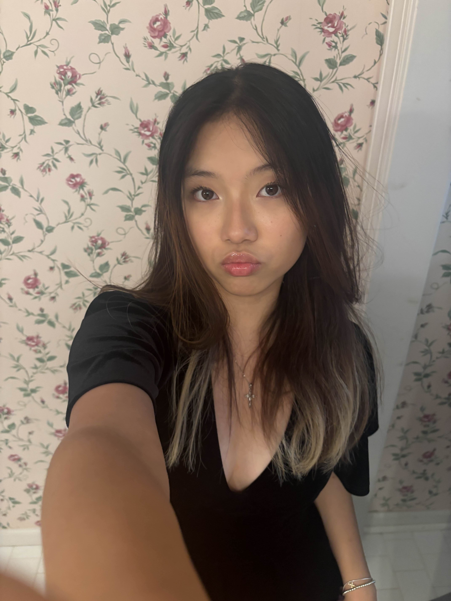
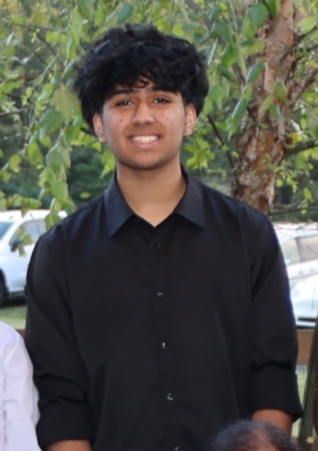
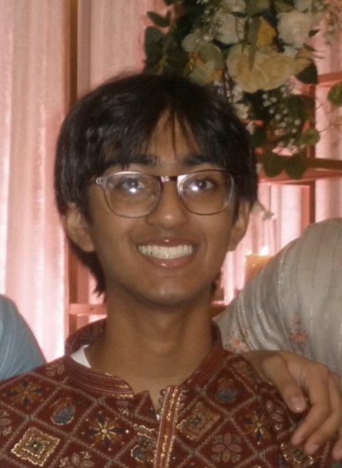
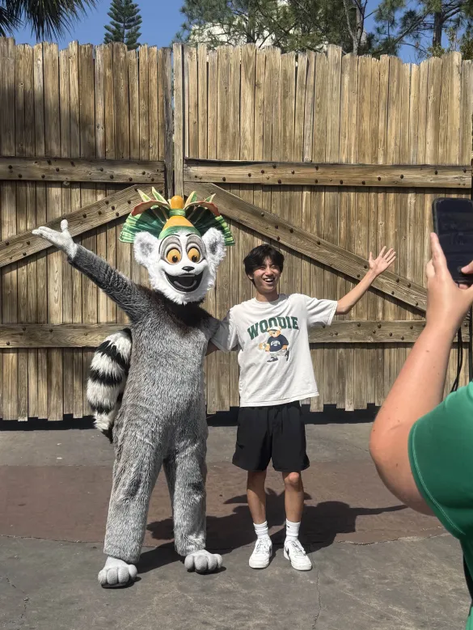

Directors
Aileen Bae
Himank Chhaya

Rishi Aka
Co-Directors
Ayush Patel
Daniel Bae
Event Supervisors
Please refrain from contacting the event supervisors directly about event information. All questions should be directed to director@rsoi.org.
Aarushi Thatola

Crime Busters B
Aashay Mody

Dynamic Planet C
Entomology C
Abrar Erattuparambil

Electric Vehicle C
Adhrit Maiti

Meteorology B
Water Quality B
Aditi Venkatesan

Solar System B
Agasya Mukkapati

Anatomy & Physiology B
Alan Cai

Codebusters B
Alex Brown

Engineering CAD C
Alex Francavilla

Metric Mastery B
Boomilever B
Alyx Bi

Disease Detectives B
Amogh Acharya

Scrambler C
Amrutha Kara

Water Quality C
Amy Peng

Anatomy & Physiology C
Remote Sensing C
Amy Zhou

Experimental Design B
Machines B
Anandavel Sakthi

Remote Sensing B
Robot Tour C
Andrew Xing

Astronomy
Fermi Questions C
Robot Tour C
Aneesh Iyer

Codebusters C
Anirudh Kalyanaraman

Forensics C
Materials Science C
Anish Kunapareddy

Anatomy & Physiology C
Anna Zamastsynania
Astronomy C
Asmitha Etukala

Forensics C
Brycen Nelson

Materials Science C
Claire Huang

Anatomy & Physiology B
Claire Lin

Codebusters C
Claire Long

Entomology B
Chloe Zhang

Mission Possible B
Connor Chang

Dynamic Planet B
Rocks and Minerals B
Divyang Saran
Disease Detectives C
Electric Vehicle C
Emmy Bonser
Rocks and Minerals B/C
Eric Liu

Designer Genes C
Heredity B
Evan Xiang

Anatomy & Physiology C
Gianne Rimando

Potions and Poisons B
Forensics C
Gokul Kesav

Write It Do It C
Hitai Lu

Entomology C
Ishaan Arya

Water Quality C
Jeremy Lee

Codebusters B
Jessica Wang

Helicopter C
Jingyu Xiao

Remote Sensing C
Kaci Morris

Dynamic Planet C
Keith Dai

Chemistry Lab C
Designer Genes C
Keshiha Dogiparti

Crime Busters B
Fossils B/C
Metric Mastery B
Write It Do It B
Malachi Dawson

Entomology B
Water Quality B
Melinda Zhao

Heredity B
Michael Wu
Disease Detectives C
Minho Shin
Experimental Design C
Mukund Sagi

Engineering CAD C
Nick Chao
Chemistry Lab C
Disease Detectives B
Nina Zhang

Circuit Lab B
Nobel Lok

Helicopter C
Hovercraft C
Olivia Lu

Machines C
Priyanshu Dasgupta

Machines C
Rahib Hyder

Rocks and Minerals C
Sarah Zhou

Boomilever C
Helicopter B
Shannon Imaoka

Potions and Poisons B
Shiven Gupta

Circuit Lab C
Shubh Shah

Dynamic Planet B
Experimental Design B
Tony Mei
Boomilever B/C
Verna Acharya

Machines B
Remote Sensing B
Solar System B
Victoria Cheng

Meteorology B
Vikram Nguyen
Circuit Lab C
Vilius Staraitis

Hovercraft C
Mission Possible B
Scrambler C
Wei-Cheng Tseng

Helicopter B
William Huang